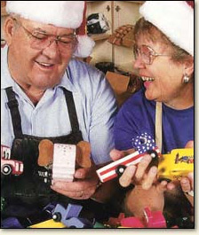

Donate to the Happy Factory!

A note from the late Charles Cooley, Founder:
One day I went to the post office to pick up the mail and there was a small envelope. I noticed the return address was just a street number in Tooele, UT. I opened it and there were two one dollar bills and a little yellow note with a paper clip. The note said; “I’m sorry this is all that I can do, hope it will help.”
After working through my tears I finally got the two dollars back in the envelope.We have received many donations but this is one that I will never forget.
Two dollars – hope it will help. It DID help. Two dollars translates to approximately four toys. In the future of those four toys will be four children who have been given a physical token of joy. It helped more than the giver will ever know.
We accept donations online through PayPal or by credit card.
Or, send a Check or Money Order to:
The Happy Factory 896 N. 2175 W. Circle Cedar City, Utah 84721
We would love to have a note with your donation. Let us know if you have a good story or would like the money used in a specific way.